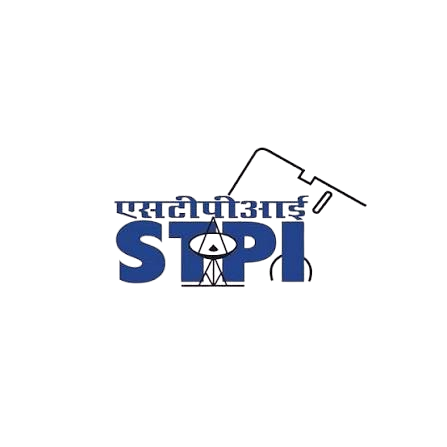

Svashasan Labs

STPISTPI CoE & MOTION Lab: A strategic guide for Svashasan Labs
Strategic research briefing · India · November 2026
How to use the Software Technology Parks of India ecosystem to move Svashasan OS from a CARLA/ROS 2 simulation MVP towards an automotive-compute demonstrator, OEM evaluation and product validation.
Primary target: MOTION Pune · ACES mobility · Incubation · labs · industry access
Research briefing for internal strategy and application preparation. Verify current programme terms directly with STPI before making commitments.
1. Executive overview
Recommendation
Recommendation: Svashasan Labs should actively explore STPI's MOTION – ACES Mobility Centre of Entrepreneurship in Pune. Its automotive and mobility focus makes it more directly relevant than a generic startup incubator.
STPI is not one central laboratory. It operates a network of Centres of Entrepreneurship (CoEs), each with different technology specialisations, facilities, partners, selection processes and commercial terms. The objective should be to identify the centre that can help Svashasan progress from simulation to physical automotive compute integration and OEM-evaluable validation.
Primary objective: Hardware demonstrator
Deploy Svashasan OS and autonomy workloads on automotive-grade development compute.
Second objective: Industry credibility
Build relationships with OEMs, Tier 1 suppliers, testing organisations and engineering partners.
Third objective: Capital efficiency
Access expensive lab equipment before committing company capital to purchasing it.
2. What exactly is STPI?
Institution
Software Technology Parks of India (STPI) is an autonomous society under the Ministry of Electronics and Information Technology (MeitY), Government of India. Established in 1991, it promotes technology entrepreneurship, software product development, R&D, innovation and intellectual property creation.
Centres of Entrepreneurship
Domain-specific incubation, specialised laboratories, mentorship and industry engagement.
NGIS
Next Generation Incubation Scheme: incubation and financial support for selected software product startups.
STPI Labs Network
Specialised equipment and facilities for prototyping, testing and product development.
STPI's support model can span ideation, prototyping, MVP development, testing and commercialisation. Actual facilities, eligibility and benefits differ by centre and programme.
3. MOTION – ACES Mobility CoE, Pune
Primary target · Highest strategic relevance for Svashasan
MOTION is STPI's Centre of Entrepreneurship focused on Autonomous, Connected, Electric and Shared mobility (ACES). It is based in Pune and was established with government and industry ecosystem participation to support mobility innovation, R&D, product development, incubation and commercialisation.
Its published focus areas include:
Autonomous vehicles
Perception, sensor integration, vehicle intelligence and autonomy technology.
Electric vehicles
EV systems, battery technology, power electronics and charging.
Connected vehicles
Vehicle connectivity, communications, telematics and connected services.
Shared mobility
Technology supporting shared and next-generation mobility services.
Why Svashasan fits
| Svashasan module | MOTION relevance |
|---|---|
| Vehicle OS and embedded Linux | Connected vehicle technology and embedded systems |
| Perception and sensor fusion | Autonomous vehicles |
| Prediction and planning | Autonomous vehicles |
| Vehicle communication and telematics | Connected vehicles |
| OTA architecture | Connected vehicles and software updates |
| EV powertrain interfaces | Electric vehicle systems |
| BMS and energy orchestration | EV and battery technology |
| V2X | Connected and shared mobility |
This is a strong product-domain fit: MOTION's mobility focus overlaps with the core engineering problem Svashasan is solving.
4. Laboratory infrastructure
Physical infrastructure
The MOTION laboratory inventory describes equipment across autonomous vehicles, electric vehicles, mobility electronics and prototyping. The items below are published inventory references; confirm current availability, model, access rights, compatibility, booking and charges directly with the centre.
A. Autonomous vehicle laboratory
| Equipment / platform | Potential Svashasan application |
|---|---|
| NVIDIA DRIVE AGX development platform | Deploy and benchmark autonomy workloads on automotive compute. |
| RADAR sensors and development kit | Radar processing, object tracking and sensor fusion. |
| LiDAR development kit | 3D perception, mapping and obstacle detection. |
| Stereo and mono cameras | Camera perception, calibration and image pipelines. |
| IMU + GNSS / REACH RS+ survey kit | Localization, positioning and sensor calibration. |
| Automotive connectivity development platform | Connected-vehicle integration and communications. |
| IoT and robotics development boards | Embedded prototyping and interface development. |
| Ultrasonic sensors | Parking and short-range obstacle detection. |
Priority request: NVIDIA DRIVE AGX access, camera, radar, LiDAR and IMU/GNSS equipment. Confirm the exact DRIVE hardware generation, SDK/toolchain version, user access and whether deployment of third-party software is permitted.
B. Electric vehicle laboratory
| Equipment | Potential application |
|---|---|
| Three-phase BLDC motor development kit | Motor-control integration and prototyping. |
| Motor Control Evaluation Module | Powertrain control prototyping. |
| Dyno setup up to 50 kW | Motor performance testing. |
| High-voltage power supplies | Power electronics testing. |
| Electrical safety analyser | Electrical safety measurements. |
| AC and DC EV chargers | Charging infrastructure integration. |
| Electronic load | Power-system testing. |
| Power meter and analyser | Energy and electrical measurement. |
C. Mobility electronics and prototyping laboratory
| Equipment | Potential application |
|---|---|
| Oscilloscopes, including high-bandwidth instruments | Signal integrity and embedded hardware debugging. |
| Logic analysers | Digital bus and interface debugging. |
| Spectrum analysers | RF and communications investigation. |
| Function and waveform generators | Signal injection and test setup. |
| Data loggers | Time-series and system measurement. |
| Thermal imaging cameras | Thermal diagnostics. |
| PCB prototyping machines | Electronics prototyping. |
| Professional soldering equipment | Board assembly and rework. |
| 3D prototype printers | Enclosures, mounts and mechanical prototypes. |
| High-speed laboratory computers | Development, simulation and data analysis. |
Source: MOTION official website and laboratory inventory. Equipment list and rental conditions must be reconfirmed with MOTION.
5. Software and engineering resources
Engineering toolchain
The published MOTION inventory references software and tools that may be useful for automotive software and hardware development.
| Software / tool | Potential Svashasan use |
|---|---|
| MATLAB | Algorithm development and numerical analysis. |
| Simulink | Vehicle dynamics and control-system modelling. |
| CANoe | Automotive network simulation, analysis and testing. |
| IAR / Keil | Embedded firmware development. |
| PCB design tools | Hardware prototyping. |
| Hardware circuit simulation tools | Electronics design and analysis. |
| NVIDIA DRIVE AGX | Automotive compute evaluation and deployment. |
Proposed three-layer Svashasan engineering environment
Layer 1: Simulation
CARLA + ROS 2 + RViz2 + automated scenario regression.
↓
Layer 2: Automotive compute
NVIDIA DRIVE AGX + camera/radar/LiDAR + IMU/GNSS + embedded deployment.
↓
Layer 3: Physical validation
Automotive interfaces + CAN testing + sensor calibration + hardware performance measurement.
This is a proposed Svashasan workflow, not a claim that MOTION supplies a pre-integrated end-to-end stack.
6. What MOTION may provide beyond lab access
Incubation value
1. Physical incubation
Plug-and-play workspace, ACES lab access, internet, NOC and advertised 24/7 workspace operations. Confirm the package and actual access conditions.
2. Technical and business mentorship
Mentoring for POCs, prototypes, MVPs, product development, business models and go-to-market.
3. Industry connections
Networking, roadshows, marketing, industry outreach and potential customer introductions.
4. Intellectual property support
Patent drafting and filing facilitation, trademark, copyright and related support through STPI's NRDC arrangement.
5. Funding and investor access
Facilitation for grants, corporate funding, CSR, angels, HNIs, VCs and debt.
Important: These are programme offerings and facilitation pathways, not guaranteed deliverables for every incubated company. Ask which services are active, included, chargeable and available to your stage.
7. Industry and institutional partner ecosystem
Ecosystem
MOTION's published partner ecosystem has included organisations relevant to Svashasan's engineering and commercial roadmap. Their inclusion in the ecosystem does not mean that each partner has committed to work directly with every incubated startup.
| Partner | Why the relationship may matter | Potential Svashasan ask |
|---|---|---|
| Tata Motors | Automotive OEM and EV ecosystem. | Engineering evaluation pathway or referral to relevant vehicle software team. |
| Intel | Semiconductor and computing ecosystem. | Embedded compute and software ecosystem engagement. |
| Visteon | Automotive cockpit electronics and connected-vehicle technology. | Vehicle electronics and software integration discussion. |
| ARAI | Automotive research, testing and validation ecosystem. | Understand relevant test and validation pathways. |
| MathWorks | MATLAB and Simulink engineering tools. | Modelling, simulation and control engineering support. |
| Kinetic Green | Electric vehicle manufacturer. | EV integration or demonstrator collaboration. |
| COEP Technological University | Engineering and academic ecosystem. | Research and engineering collaboration. |
| SINE, IIT Bombay | Startup ecosystem and entrepreneurial network. | Potential ecosystem and founder connections. |
| SAEINDIA, TiE Pune, TiE Mumbai, NRDC | Automotive professional, business and IP networks. | Technical community, market access and IP facilitation. |
Ask MOTION: Which partners are actively engaging with startups? What introductions can be arranged? Are there defined joint programmes, technical office hours, pilot pathways or evaluation processes?
8. Eligibility and commercial terms
Admission and terms
MOTION's published eligibility conditions describe the following criteria. Svashasan's final eligibility must be confirmed by STPI against the current application policy and company documents.
| Requirement | Published condition | Svashasan position / action |
|---|---|---|
| Legal entity | Private Limited, registered Partnership or LLP. | Svashasan Labs Private Limited; provide incorporation proof. |
| Incorporation age | Not more than 10 years. | Appears to satisfy; verify incorporation date. |
| Annual turnover | Not exceeding ₹100 crore in any financial year since incorporation. | Confirm from company accounts and filings. |
| Original entity | Cannot be formed by splitting or reconstructing an existing business. | Verify and document company history. |
| Innovation | Must develop or improve an innovative, scalable product/service/process. | Strong alignment with the vehicle OS and software-defined mobility proposition. |
MOTION's published terms also describe an unregistered-startup route, subject to incorporation within three months of selection. This is not relevant if Svashasan is already incorporated.
Commercial terms to verify and negotiate
₹2,500 — Published incubation charge per seat per month, plus applicable taxes
This is the published figure referenced in the research. Confirm current rates, seat minimums, billing period and whether it applies to the proposed programme.
The published terms state that the startup must offer equity to STPI/STPINEXT as decided and agreed upon. Do not assume incubation is free or equity-free.
Eight questions before signing
- What exact equity percentage or instrument is applicable to this programme?
- Is equity issued to STPI or STPINEXT, and what entity is the contracting party?
- Does the per-seat charge apply to all incubated seats?
- Is lab usage included in incubation fees?
- Are there separate equipment access, consumables, maintenance or operator charges?
- Does virtual incubation have different terms?
- Does Svashasan retain ownership of all pre-existing patents, source code, architecture, models, data and background IP?
- How is jointly developed foreground IP owned, licensed, protected and commercialised?
IP protection is non-negotiable: Svashasan's OS architecture and vehicle software are core company assets. Do not accept broad IP assignment or unclear licensing provisions merely to access a laboratory.
9. Funding opportunities through STPI
Financial support
A. Funding facilitation through MOTION
MOTION advertises facilitation and access to government grants, corporate funding, CSR, angel investors, HNIs, venture capital and debt financing. This is not a fixed grant entitlement and does not guarantee an investment or funding outcome.
B. Next Generation Incubation Scheme (NGIS)
Published maximum seed funding: ₹25 lakh — Per selected beneficiary startup, subject to scheme eligibility, selection and evaluation.
| Support component | Published provision / description |
|---|---|
| Seed funding | Up to ₹25 lakh. |
| Pre-incubation | Up to six months. |
| Pre-incubation stipend | ₹10,000 per month (as published in scheme material). |
| Cloud credits | Access to eligible cloud-provider credits. |
| Security testing | Software Product Security Testing support. |
| Incubation | Plug-and-play workspace. |
| Other support | Mentoring, IPR, VC access and market connect. |
The published NGIS programme describes a budget of ₹95.03 crore over three years and a target of 300 selected startups. Treat these as scheme-publication figures and verify current status, remaining allocation, application windows and current guidelines.
Published NGIS centre locations: Agartala, Bhilai, Bhopal, Bhubaneswar, Dehradun, Guwahati, Jaipur, Lucknow, Prayagraj, Mohali, Patna and Vijayawada. Pune was not included in the published list reviewed for this briefing.
Critical distinction: MOTION admission does not automatically qualify Svashasan for NGIS funding. NGIS is a separate scheme with its own participating centres and selection process. Ask MOTION whether it can refer Svashasan to an eligible NGIS centre and whether applications are currently open.
Illustrative use of a ₹25 lakh grant
| Proposed allocation | Amount |
|---|---|
| Automotive compute and hardware integration | ₹8 lakh |
| Sensor integration and calibration | ₹4 lakh |
| Embedded OS and middleware development | ₹4 lakh |
| Simulation and validation infrastructure | ₹3 lakh |
| Cybersecurity and OTA prototype | ₹3 lakh |
| Technical documentation and testing | ₹2 lakh |
| Contingency | ₹1 lakh |
| Total | ₹25 lakh |
This is a proposed planning allocation, not an approved NGIS budget or confirmed list of eligible expenses. Confirm scheme-specific expenditure rules before committing funds.
10. Proposed Svashasan–MOTION development roadmap
Product execution
Use MOTION as the physical engineering and validation environment for the transition from simulation to embedded automotive hardware. The estimates below are suggested workstream durations, not STPI programme timelines; workstreams may overlap.
Stage 1: Hardware bring-up (3–4 weeks)
- Secure NVIDIA DRIVE AGX access and confirm supported software stack.
- Establish Linux/embedded runtime compatibility.
- Bring up camera, radar, LiDAR and IMU/GNSS.
- Verify sensor timestamps, data rates and interfaces.
- Establish hardware performance baselines.
Stage 2: Perception and sensor fusion (4–6 weeks)
- Deploy camera detection and radar processing.
- Integrate sensor fusion and localization.
- Measure end-to-end perception latency.
- Record accuracy, false positives/negatives and scenario coverage.
Stage 3: OS integration (4–6 weeks)
- Integrate autonomy modules into Svashasan OS.
- Implement hardware abstraction and standardised ROS 2/vehicle service interfaces.
- Add health monitoring, resource management and process supervision.
- Define the safety supervisor boundary and command-authority controls.
Stage 4: Vehicle integration and OTA (3–4 weeks)
- Test CAN communication and vehicle-state interfaces.
- Build an OTA demonstrator with signature verification, rollback and failure recovery.
- Define secure update and cybersecurity tests.
- Engage QNu Labs for the specifically agreed cryptographic scope.
Stage 5: Validation and OEM demonstration (3–4 weeks)
- Run repeatable simulation and hardware tests.
- Document performance, limitations and failure scenarios.
- Prepare an engineering demonstration and evidence pack.
- Seek OEM engineering evaluation and, where appropriate, a non-binding LOI.
Expected programme outputs
- Reproducible embedded deployment of Svashasan OS.
- Documented automotive hardware compatibility matrix.
- Working sensor integration pipeline.
- Measured perception and localization benchmarks.
- Functioning OTA update demonstrator.
- Technical validation report.
- OEM-oriented integration architecture and demonstration package.
11. Standards and compliance roadmap
Safety and compliance
MOTION is an incubation and engineering facility, not an automotive certification authority. Its ecosystem may help Svashasan build evidence and relationships for eventual automotive qualification.
| Standard / framework | Why Svashasan needs it | Potential contribution of the ecosystem |
|---|---|---|
| ISO 26262 | Functional safety for road vehicles. | Engineering mentorship, specialist referrals and relevant testing ecosystem. |
| ISO 21448 (SOTIF) | Safety of intended functionality, including perception limitations and foreseeable misuse. | Scenario testing and perception validation support. |
| ISO/SAE 21434 | Road-vehicle cybersecurity engineering. | Cybersecurity expertise and architecture review referrals. |
| ISO 24089 | Software update engineering. | OTA engineering and process testing. |
| UNECE R155 | Vehicle cybersecurity management system requirements. | Industry and specialist connections. |
| UNECE R156 | Software update management system requirements. | OTA process and evidence development. |
| SAE J3016 | Taxonomy and definitions for driving automation. | Define and document actual automation capabilities and responsibilities. |
Do not conflate incubation with certification. ISO 26262 certification, UNECE R155/R156 vehicle compliance and ARAI testing are not automatically provided through incubation. Svashasan must establish applicable requirements, evidence and independent assessment arrangements with appropriate specialists and OEMs.
Near-term evidence to build
- Safety requirements, traceability and hazard analysis/risk assessment.
- SOTIF scenario catalogue and limitations documentation.
- Software bill of materials (SBOM) and vulnerability management.
- Secure boot, key management and access-control design.
- OTA failure recovery, rollback and update integrity evidence.
- Repeatable validation reports and regression results.
12. Cost and access model
Cost planning
| Service | Published information | What to confirm |
|---|---|---|
| Incubation seat | ₹2,500 + applicable taxes per seat/month (published reference). | Current tariff, minimum seats, contract period. |
| Lab equipment rental | Separate tariff-based access. | Equipment-specific hourly/day rates, operator and consumable charges. |
| Office infrastructure | Separate service / rental arrangement. | Availability and inclusions. |
| Co-working | Separate service / rental arrangement. | Seat availability and access rules. |
| Virtual incubation | Offered as a service. | Eligibility, benefits and pricing. |
Recommended negotiation: Request a structured laboratory-access package rather than paying for multiple seats before the equipment requirements are clear.
Ask whether the following can be bundled: two or three engineering seats; scheduled automotive compute access; scheduled radar, LiDAR and camera access; CAN and embedded tool access; technical support during initial bring-up; and permission to demonstrate the prototype to prospective OEMs.
Get written terms for equipment access, usage rights, confidentiality, data ownership, IP ownership, publication rights and restrictions on external demonstrations.
13. How to apply to MOTION
Application
MOTION CoE – Pune
Official website and application route
- motion.stpi.in
- Startup application portal
- Email: motion@stpi.in
- Phone: 020-27126616 (Bhosari facility)
- Address: Ground Floor, Electronic Sadan-III, MIDC, Bhosari, Pune – 411026.
The application page is published, but the current availability of a fresh application window should be confirmed with the CoE before submission. Contact details and programme terms can change.
Application preparation checklist
Readiness tracker · 0 / 13 ready
14. How Svashasan should position itself
Selection strategy
Do not approach MOTION as a startup seeking free office space or generic incubation. Approach it as an automotive software company seeking a specialised engineering and validation environment.
Recommended application positioning
Svashasan OS – Automotive Software Infrastructure for Software-Defined Mobility
Svashasan Labs is developing a modular, hardware-agnostic operating system for electric and software-defined vehicles, integrating vehicle abstraction, perception, sensor fusion, autonomy workloads, connected-vehicle services, OTA infrastructure and vehicle lifecycle management.
Having developed a simulation MVP using CARLA and ROS 2, we are progressing towards physical automotive compute integration and controlled-environment validation.
We intend to leverage MOTION's ACES infrastructure to accelerate embedded deployment, sensor integration, automotive networking, hardware benchmarking and OEM-oriented product validation.
Our objective is to establish a repeatable automotive software platform that OEMs can evaluate and integrate into their next-generation vehicle architectures.
Five specific requests for the selection meeting
- Automotive compute access: NVIDIA DRIVE AGX access, supported software versions, deployment permissions and usage availability.
- Physical vehicle integration: Access to a test vehicle or demonstrator, or introductions to organisations that can provide one.
- Technical validation: Help arranging an evaluation pathway with ARAI and relevant testing partners.
- OEM access: Introductions to engineering teams at Tata Motors, Kinetic Green, Visteon and other relevant ecosystem participants.
- Funding support: Guidance on grants, NGIS referrals and investor introductions.
Do not make all five conditions for joining. Prioritise compute access, physical vehicle integration and validation pathways because they directly affect product development.
15. Other STPI centres worth knowing
Wider STPI network
MOTION should remain the primary target. Other CoEs may offer complementary capabilities, but avoid splitting the engineering team across centres before a core hardware-validation workflow is established.
IoT OpenLab · Bengaluru
IoT and electronics prototyping, test equipment and communication modules. Potentially useful for connected-vehicle and sensor-interface development.
NEURON · Mohali
Data analytics and related technology incubation. Potentially relevant to fleet intelligence and vehicle data analytics.
IMAGE · Hyderabad
Gaming, VFX, computer vision and AI-related capabilities. Potentially relevant to perception development and visual computing.
NGIS centres
Agartala, Bhilai, Bhopal, Bhubaneswar, Dehradun, Guwahati, Jaipur, Lucknow, Prayagraj, Mohali, Patna and Vijayawada, according to the published list reviewed.
Confirm the current names, focus areas, facilities and programme status directly with STPI. Centre offerings and scheme participation can change.
16. Strategic assessment and immediate action plan
Decision and execution
| Evaluation parameter | Assessment |
|---|---|
| Product-domain alignment | Excellent |
| Automotive hardware access | Excellent potential |
| Embedded systems development | Strong |
| Autonomous vehicle development | Strong |
| EV hardware development | Strong |
| OEM ecosystem access | Valuable potential |
| IP support | Valuable |
| Funding access | Useful, not guaranteed |
| Direct grant availability | Separate confirmation required |
| Automotive certification | Not guaranteed |
| Strategic product-development value | Very high |
Immediate action plan
| Priority | Action | Target timeline |
|---|---|---|
| P0 | Contact MOTION and request an incubation meeting. | Within 48 hours |
| P0 | Request a physical tour of the Bhosari laboratory. | Within 1 week |
| P0 | Obtain equipment availability and tariff sheets. | Within 1 week |
| P0 | Submit incubation application after confirming terms. | After initial discussion |
| P1 | Present a technical hardware utilisation plan. | During evaluation |
| P1 | Discuss OEM and ARAI introductions. | During evaluation |
| P1 | Explore NGIS eligibility and referral. | During evaluation |
| P2 | Negotiate incubation and IP terms. | Before signing |
| P2 | Establish a 90-day engineering programme. | After acceptance |
Capital-efficiency strategy
Use MOTION as an alternative to purchasing expensive automotive development equipment immediately. First establish whether it can provide practical access to the compute, sensors and testing equipment required. Then reserve Svashasan's capital for what the incubator cannot provide: core engineering salaries, proprietary OS development, IP protection, software integration, independent validation and OEM-specific engineering.
Bottom line: Pursue MOTION with one clear objective: secure the infrastructure and industry support needed to make Svashasan OS demonstrable on actual automotive hardware, without unnecessarily diluting the company or buying expensive equipment upfront. Laboratory access is not ownership or unrestricted use—obtain written access, usage, confidentiality, data and IP terms.
17. Official resources and verification
References
- STPI – official website
- MOTION CoE – Pune
- MOTION startup application portal
- STPI – NGIS and programme information (navigate to current scheme page and guidelines)
Research note: This document organises the STPI/MOTION findings and strategic recommendations from the preceding research response. Published equipment, tariffs, eligibility, partner lists, NGIS funding limits, centre locations and application windows can change. Treat them as research references, not contractual commitments. Obtain current written confirmation from STPI/MOTION before budgeting, applying or signing agreements.
Internal strategic research document · Prepared for product development and incubation planning.